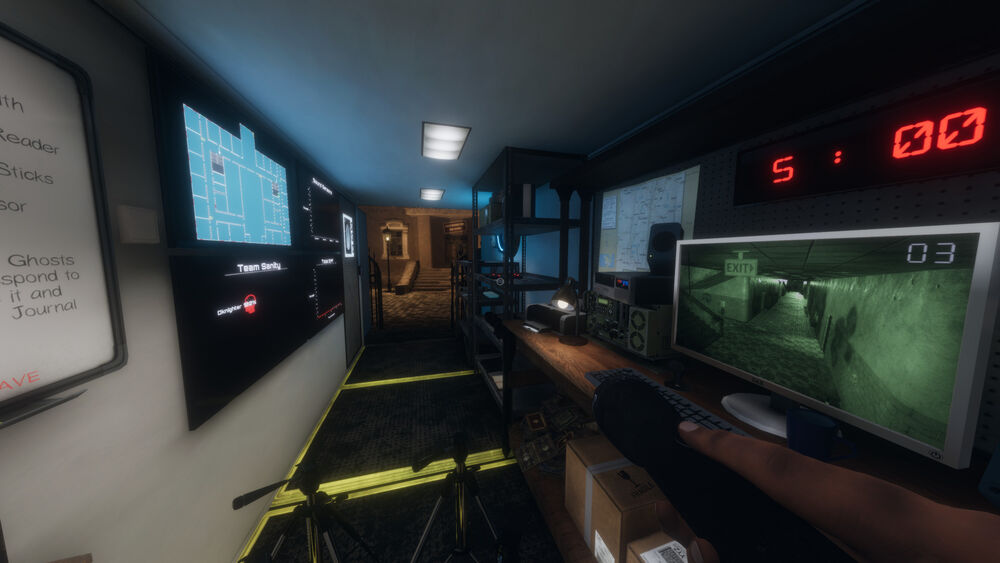
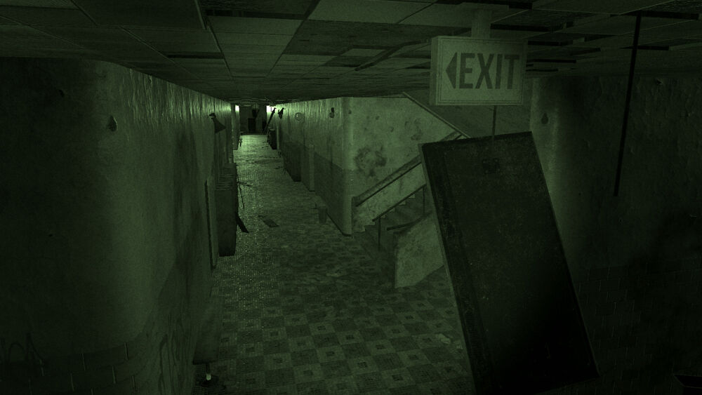
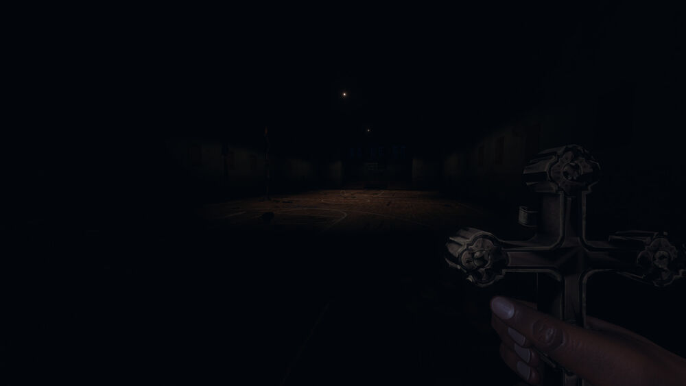
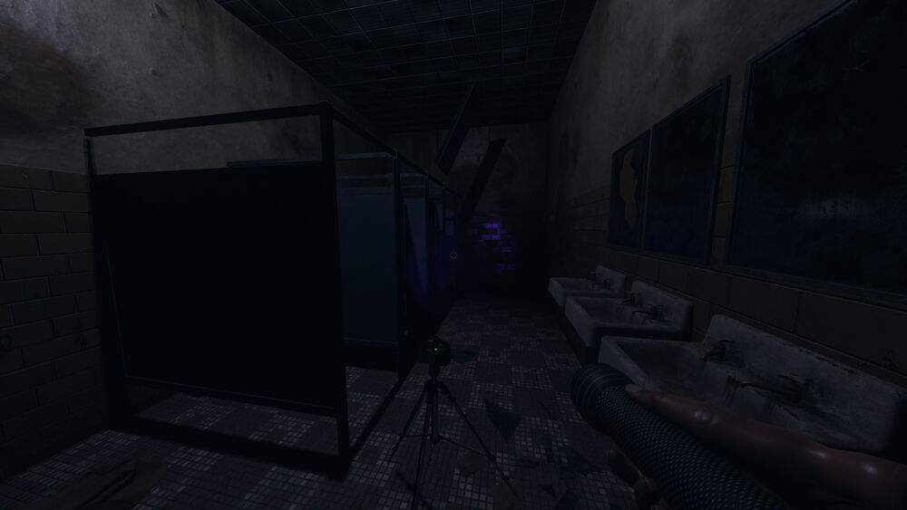

CS 428 - Student's Choice Presentation Topic
Phasmophobia VR

Gameplay Trailer by IGN
Video Presentation by Brian Yu
Virtual Reality applications are becoming much more widespread to the average consumer as all sorts of headsets such as the Oculus Rift and the HTC Vive get increasingly popular. One of the major factors of this is by games that have also helped improve the reputation of these devices by showcasing how useful they can be in improving the experience. From the most popular ones such as Beat Saber and SUPERHOT, there has been a lot of potential that was seen by these games. Phasmophobia follows this trend of virtual reality games that have made use of it in an amazing way, but to get to why this is, we need to understand what the game itself is about.
Phasmophobia is an online four player cooperative horror game made by Kinetic Games that has virtual reality support. In the game, you work together with your team to investigate paranormal activity at many haunted locations to gather evidence which is sold to a team to help remove it. By using all sorts of hunting equipment such as EMF readers, spirit boxes, thermometers, and night vision cameras, the players will try to figure out what kind of ghost it is, take pictures, and stay alive. Each investigation has four objectives that the team must accomplish that are listed on the board. For each completed objective, each team member gets some money that is amplified by the difficulty of each task. Players also must decipher the type of ghost they are dealing with by how they interact with the players and the equipment that they use. Once the players have finished selecting the ghost and have completed the objectives they can, they will end the investigation. However, it is not as simple as it seems to clear the listed goals. Each player has a level of sanity that can be viewed in the van. The lower the sanity, the more likely ghostly phenomenon can happen around them. The ghost will also become increasingly likely to attack the player if they reach a lower level of sanity, and the player will have a different experience than one with higher sanity. Players can also die if they are attacked by a ghost, and when dead, are unable to interact with those that are alive. Likewise, the ghosts themselves have different behaviors depending on their type, with some being more aggressive than others, making each game a new experience. The game also includes many different locations that you can select from which also helps creates a new experience each time.

As with every horror game, Phasmophobia focuses on creating a thrilling experience that will scare you. The game itself is intended for those that are interested in the horror genre and are looking for a new way to experience it, and by having it be cooperative with friends, it adds another aspect of terror that can be both fun and exhilarating. For instance, players can easily accidently scare each other by walking into each other in a dark room and many other similar things that can happen when interacting with one another. The game is also a great way to spend time with friends as instead of watching a horror movie together, they can instead interact with each other within a game, creating an all new way to feel and be scared and have a fun time with friends. This game showcases many astounding features that add to this experience, with one of the most important ones being the use of virtual reality to place yourself inside of the horrors that are taking place.
Phasmophobia is a great use of virtual reality by adding realistic graphics, sounds, and has minimal user interface to feel as if you are not just in the game, but really feeling as if you are walking within a haunted location. Horror games and movies were generally limited in the past to how they can scare and affect you by taking place on a screen in front of you, which headsets enhance into a full body experience that can not be showcased in the same way. By making it so that you move around as your character in the game, the scariness factor gets enhanced as the entire place all around you becomes the scene. This is also a great use of virtual reality by immersing yourself within the experience and providing you with both adrenaline and suspense. This is because you are no longer on the sidelines of the horrors that are taking place, but within it.

Players can also interact with the environment as well. By using the handheld controllers that come with the headsets, players can move around objects in the game, rotating them to specific directions, placing their equipment, items and gear in specific locations to try to figure out where the ghost is, and more information about the ghost. This interactivity is not present in other non-virtual reality games which use keyboard or controller inputs that are not as realistic as using a handheld one to, for instance, open and interact with a door. Interaction is a major key in the game that increases the level of scariness by making you way more engaged, having to face the scares and horrors head on instead of being able to hide from it by looking away. Likewise, interacting with the environment makes it a unique experience of horror as most movie and horror games are fairly one dimensional where each time you watch or play it through you will have the same things happen every time, yet in this game, being able to turn on and off lights, open doors, and do all kinds of unique things within the game that changes all the time makes each time you play through an investigation to have new scary moments.

This is not the only way the game increases the experience using virtual reality. The game has amazing audio capabilities that add to the interactivity of the game. The in-game voice chat has features such as spatial proximity where you can only hear the other players you are playing with if you are close enough to them, otherwise you would have to use a radio to communicate with one another. This makes the game feel much more realistic by only enabling you to hear things that you should and are supposed to hear. Likewise, the game also uses a voice tracking feature that uses your actual voice to interact with the ghosts. By saying the ghost’s name, the ghost will become attracted to you and appear. These audio capabilities add to the virtual reality experience by not just having your hands interacting with the environment, but also your voice. All these aspects compounded together creates a scenario of horror that can be experienced with friends in a way that is both realistic and thrilling which can not be experienced otherwise.
There are a couple downsides however to the use of virtual reality for Phasmophobia. Currently, players use headsets to play the game, but having the physical headset on top of your head can detract from the experience by making it feel unrealistic somewhat. However, the main issue is the fact that players can not walk around normally, but rather must use a joystick on their controller to move around and control the environment and surrounding objects. This detracts from some of the realism within the game as moving around by using a joystick is much less realistic than physically walking around the area. Currently, this is a limitation due to the technology of our time, but perhaps in the future we can have a new kind of method to implement this. Another downside to the technology currently is the fact that to play the game within a virtual reality environment, it is very costly, as headsets that are used to play the game would be costing hundreds of dollars, despite the game itself being relatively inexpensive.
Overall, Phasmophobia is an astonishing game that uses virtual reality in a unique way to showcase the genre of horror in a new fashion that previously we would not be able to experience. By having a cooperative experience as a horror game with friends using virtual reality, Phasmophobia does an amazing job in using virtual reality in a way that uses all its capabilities. From visually, interactively, and auditorily stimulating your senses in a scary fashion, Phasmophobia does great work in exhibiting the use of virtual reality. If you are interested in investigative mystery games in an intense, scary scenario, alone or with friends, I would highly recommend getting and playing this game. Even if you do not like horror games, the interactivity with friends makes the game very enjoyable and is definitely a totally difference experience than experiencing one alone.

Buy the game here: Phasmophobia by Kinetic Games
External link to Phasmophobia Video Presentation by Brian Yu
References
- Phasmophobia Official Site by Kinetic Games
- Phasmophobia Gameplay Trailer by Kinetic Games
- Phasmophobia by Kinetic Games
- Phasmaphobia Wiki used for game information and images by Ferthi
- Phasmophobia Gameplay used for video presentation by BeardoBenjo